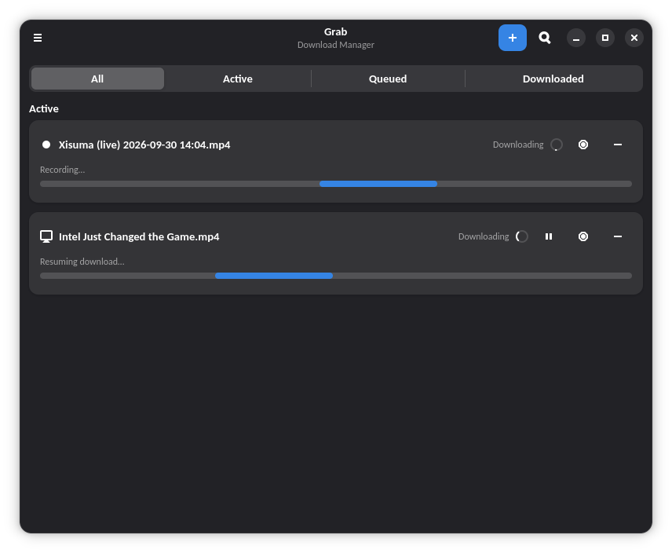
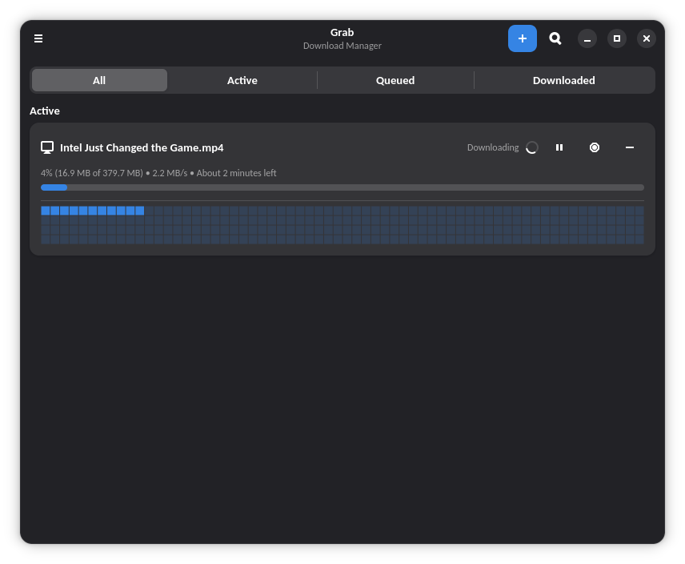
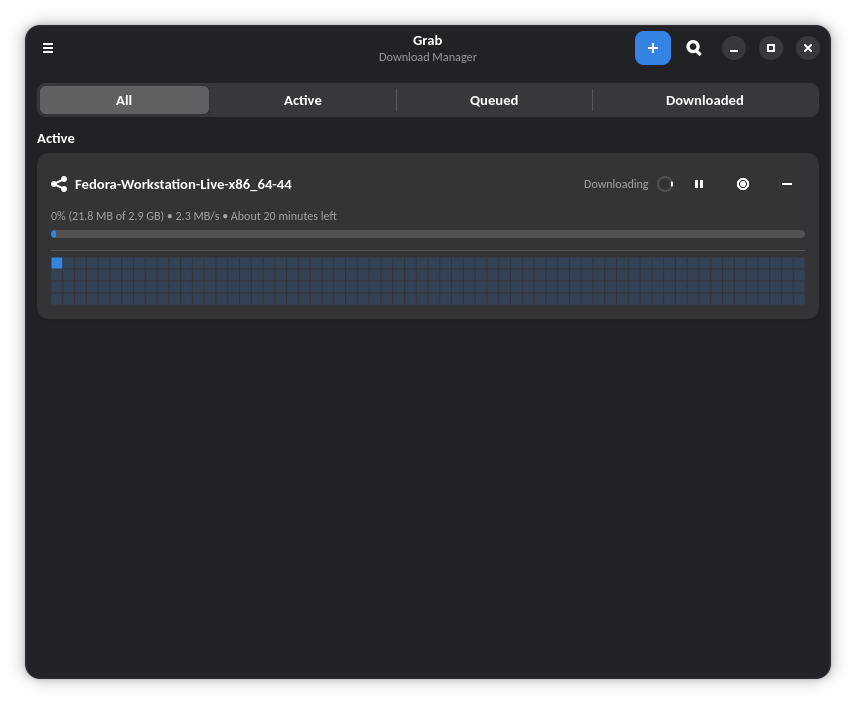
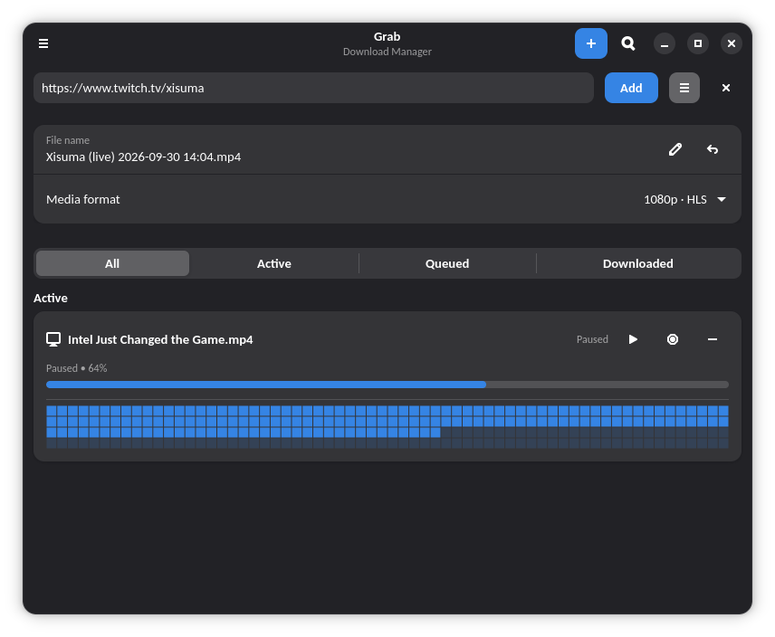

Grab is fast, keyboard-friendly, and built for GNOME. Segmented downloads, video extraction, torrents, and live capture — no Electron, no clutter.

Six reasons Grab earns a place in your dock.
Split files across parallel connections for maximum throughput. Automatic resume, per-block progress maps, and integrity checks on every piece.
Paste a URL and pick a format. Powered by yt-dlp with quality selection, subtitles, and metadata — inline in the New Download card.
Full torrent support: magnet links, .torrent files, per-file selection, DHT, and seeding controls.
Record live streams as they broadcast. Crash-safe staging means an interrupted capture never loses your recording.
Send downloads straight from Firefox, Chrome, or Brave. The companion extension hands URLs to Grab with one click.
GTK 4 and libadwaita throughout. Follows GNOME HIG, respects your theme, and stays out of the way.
Real screenshots, no mockups.



Two commands and you're downloading.
Gets updates automatically with flatpak update.
# Add the FlatPark remote (once)
flatpak remote-add --if-not-exists flatpark https://dl.flatpark.org/flatpark.flatpakrepo
# Install Grab
flatpak install flatpark io.github.linuxuser67.Grab
Prefer the tarball or the standalone .flatpak bundle:
flatpak install --user Grab.flatpak